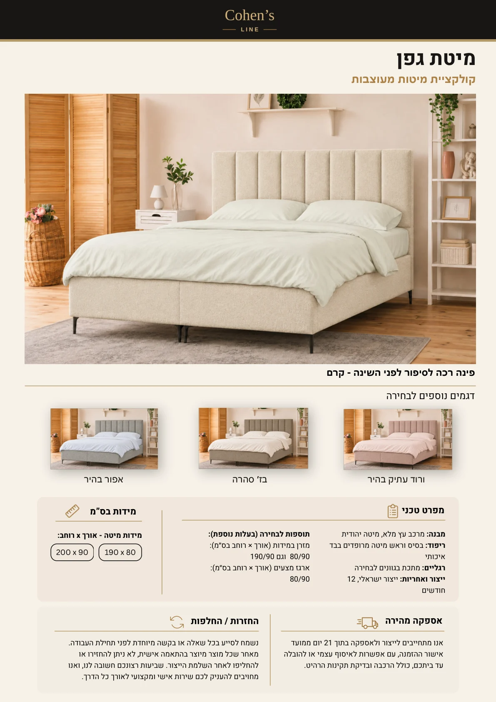
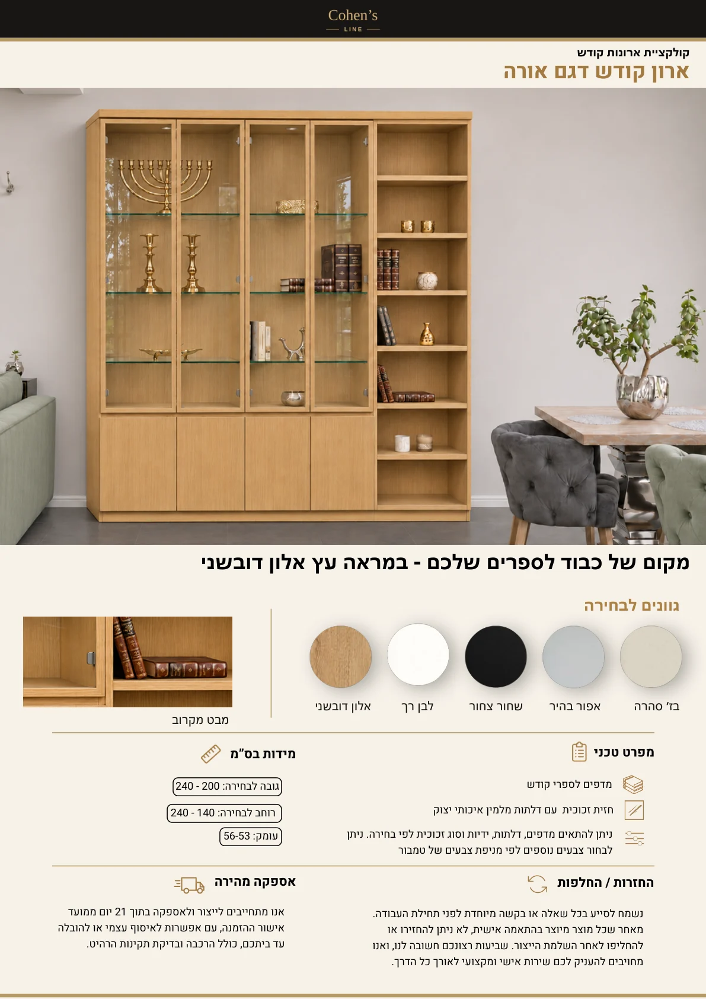

6 קטלוגים מלאים

Cohen’s Line
שישה קטלוגים. שפה חזותית אחת.
ישראל (שרוליק) שריקי · מעצב גרפי
אני יוצר זהויות מותג, קטלוגים וחומרים לדפוס, עם תשומת לב לתוכן, להיררכיה ולחוויה. לכל רעיון יש סיפור. בואו נמצא את הדרך לספר אותו.

 מיתוג. דפוס. סיפור חזותי.
מיתוג. דפוס. סיפור חזותי.מבחר מהסטודיו
משפה חזותית לעסק ועד קטלוג שלם — עבודות במיתוג, בדפוס ובצילום.
6 פרויקטים מוצגים

שישה קטלוגים. שפה חזותית אחת.
זהות מותג, לוגו ותפריטים בעברית.
כרטיס ביקור עם סדר, צבע ומקום לסריקה.

כרזות, פליירים ועבודות עימוד.

נוף, אדריכלות ואור ברגע אחד.
לוגואים וניסויים בזהות חזותית.
נעים להכיר
הרקע שלי בעיתונאות ובתקשורת גרפית משפיע על הדרך שבה אני מעצב: קודם מבין את המסר ואת הקהל, ואז נותן להם צורה.
אני עובד על מיתוג, קטלוגים, כרטיסי ביקור וחומרים לדפוס. חשוב לי שעיצוב יהיה גם בעל אופי וגם ברור ונוח לשימוש — מהכותרת הראשונה ועד לפרטי הקשר.
ספרו לי על הרעיון שלכםמיתוג לעסק, קטלוג חדש או חומר לדפוס — אשמח לשמוע מה אתם רוצים ליצור.